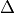

<p class="caption"><span class="caption-text">Contents:</span></p>
<ul>
<li class="toctree-l1"><a class="reference internal" href="introduction.html">Introduction</a></li>
<li class="toctree-l1"><a class="reference internal" href="methodology.html">Methodology</a><ul>
<li class="toctree-l2"><a class="reference internal" href="methodology.html#detection-methods">Detection methods</a></li>
<li class="toctree-l2"><a class="reference internal" href="methodology.html#q-criterion">Q criterion</a></li>
<li class="toctree-l2"><a class="reference internal" href="methodology.html#criterion"> criterion</a></li>
<li class="toctree-l2"><a class="reference internal" href="methodology.html#swirling-strength-criterion">Swirling strength criterion</a></li>
<li class="toctree-l2"><a class="reference internal" href="methodology.html#localization-of-the-extrema">Localization of the extrema</a></li>
<li class="toctree-l2"><a class="reference internal" href="methodology.html#fitting-of-coherent-structures">Fitting of coherent structures</a></li>
<li class="toctree-l2"><a class="reference internal" href="methodology.html#lamb-oseen-vortex">Lamb-Oseen vortex</a></li>
<li class="toctree-l2"><a class="reference internal" href="methodology.html#non-linear-least-squares">Non-linear least squares</a></li>
<li class="toctree-l2"><a class="reference internal" href="methodology.html#validation">Validation</a></li>
<li class="toctree-l2"><a class="reference internal" href="methodology.html#references">References</a></li>
</ul>
